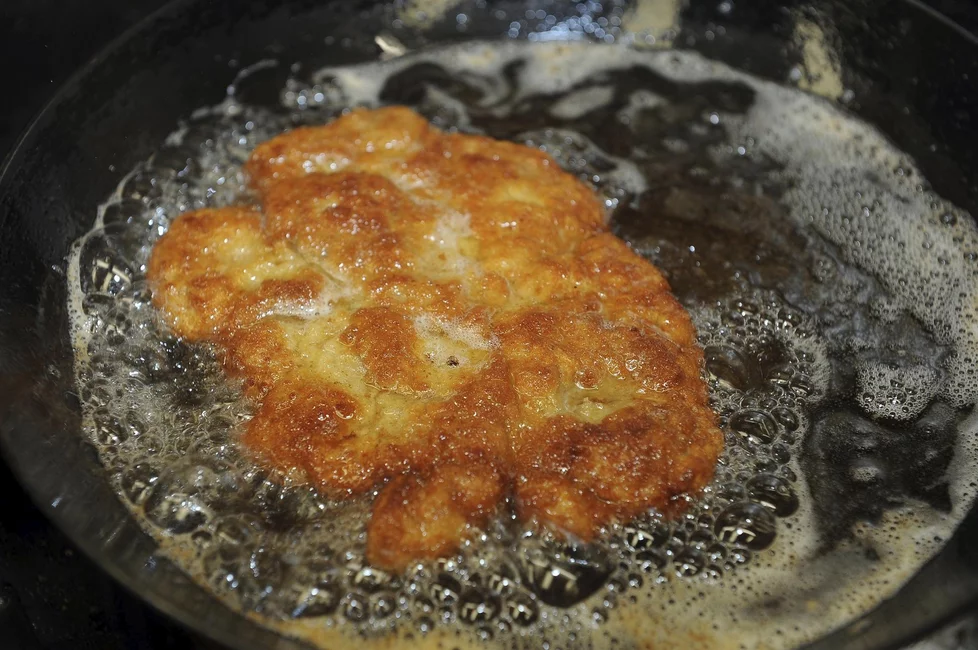

Řízek
postup:
Kuřecí maso jemně naklepeme, opravdu opatrně, aby se nerozpadlo. Nejlépe přes igelitový sáček.
Plátky kuřecího osolíme, opepříme a klasicky v trojobalu obalíme: hladkou moukou, rozšlehaným vajíčkem, do kterého jsme kápli 3 kapky oleje, strouhankou.
Přidejte koření: sladkou papriku, sůl, majoránku a česnek. Míchejte a rychle zalijte horkou vodou nebo vývarem.
V pánvi si rozpálíme olej a kuřecí řízky v něm zprudka opečeme. Smažené kuřecí řízky odkládáme na ubrousek, abychom je zbavili přebytečného tuku.
Smažené kuřecí řízky podáváme s bramborový salátem a citronem, nebo jinou přílohou podle chuti. Pokud bychom chtěli chuť řízků obohatit, můžeme do vajíčka nebo do strouhanky přidat trochu oblíbeného koření. Stačí grilovací koření.
